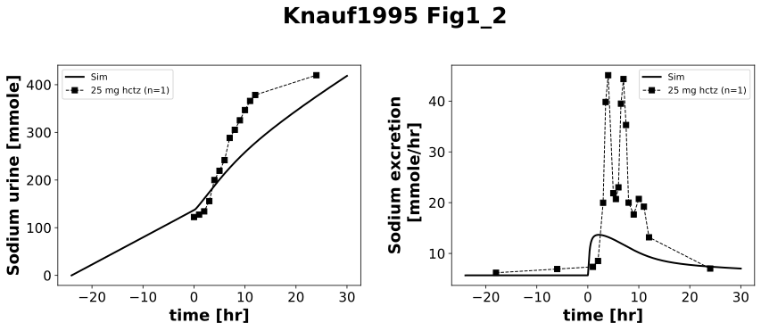
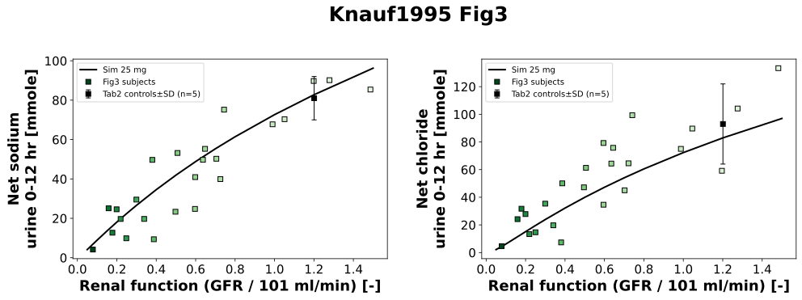

Overview
Models
| model | source |
|---|---|
| model | hctz_body_flat.xml |
Datasets
Figures (2)




Code
"""Simulation experiment of the study Knauf1995."""
from typing import ClassVar, override
import matplotlib
import numpy as np
import pandas as pd
from matplotlib.colors import LogNorm, to_hex
from pkpdsim.metadata import (
ApplicationForm,
Coadministration,
Dosing,
Fasting,
Health,
PKPDMappingMetaData,
Route,
Tissue,
)
from sbmlsim import Q
from sbmlsim.data import DataSet
from sbmlsim.fit import FitData, FitMapping
from sbmlsim.plot import Axis, Figure
from sbmlsim.simulation import Change, Dimension, Scan, Simulation
from sbmlsim.simulation.observables import Formula, Observable
from pkdb_models.models.hctz import MODEL
from pkdb_models.models.hctz.experiments.base_experiment import (
HCTZSimulationExperiment,
)
from pkdb_models.models.hctz.experiments.scans.scan_parameters import (
HCTZParameterScan,
)
class Knauf1995(HCTZSimulationExperiment):
"""Simulation experiment of Knauf1995.
Single oral dose of 25 mg HCTZ in 19 patients with chronic renal
insufficiency and 6 healthy controls (creatinine clearance 1 to 153
ml/min, Table 1), fasted, on a controlled intake of 200 mmol sodium
chloride a day from 3 days before the study on, in the steady state of the
urinary sodium (methods p395).
The effect of HCTZ is the net excretion: the excretion during the action of
the drug, 12 hr, minus the excretion of the control period, the mean rate
of the 24 hr before the dose extrapolated over the 12 hr (methods p395,
legend of Fig1). Fig3A/B give the net sodium and chloride of every subject
against its creatinine clearance during the 12 hr after the dose, Table 2
the mean of the 5 healthy controls. Fig1 and Fig2 are a single healthy
subject.
The simulation measures the net excretion as the study does: the urine
is emptied 24 hr before the dose, and at the dose the urine of the control
period, U24, is replaced by -12/24 * U24 (a change by a formula), so that
the sodium and the chloride in the urine at 12 hr are the net excretion.
Every subject of Fig3 is a simulation at its renal function,
`renal_function(clearance)`; the kidney disease is chronic, a simulation
starts `equilibration` days before the dose at the renal function, so that
the extracellular fluid is in the steady state of the renal function at
the dose (see Dussol2005). The scan of the renal function draws the net
excretion over the renal function in the figure.
"""
#: the days of the drug-free run before the dose
equilibration: ClassVar[int] = 28
#: the duration of the action of HCTZ over which the net excretion is
#: measured [hr]: 12 hr after HCTZ (legend of Fig1, Fig5), the action lasts
#: longer in end-stage renal failure (up to 24 hr, results p396), the net
#: excretion is still that of 12 hr (Fig5)
action: ClassVar[float] = 12.0
#: the renal functions of the scan of the figure, the creatinine
#: clearances of Fig3 (5 to 150 ml/min) relative to `gfr_healthy`
renal_functions: ClassVar[np.ndarray] = np.array(
[0.05, 0.075, 0.1, 0.15, 0.2, 0.25, 0.3, 0.4, 0.5, 0.6, 0.7, 0.8, 1.0, 1.2, 1.5]
)
#: the mean creatinine clearance of the 5 healthy controls of Table 2, the
#: mean of the 5 points of Fig3 at 100 to 150 ml/min [ml/min]; the net
#: excretion of Table 2 is the mean of these points (81 and 80.7 mmol
#: sodium, 93 and 92.3 mmol chloride)
clearance_controls: ClassVar[float] = 121.3
#: the net excretion by the amount in the urine: the label of the data of
#: Fig3 and of Table 2
net: ClassVar[dict[str, tuple[str, str]]] = {
"na_urine": ("na", "na_net_hctz25"),
"cl_urine": ("cl", "cl_net_hctz25"),
}
info: ClassVar[dict[str, str]] = {
"na_urine": "Fig1_na_urine_healthy",
"NA_EXCRETION": "Fig2_exc_na_healthy",
}
def _fig3(self) -> dict[str, pd.DataFrame]:
"""Get the subjects of Fig3 by electrolyte, in the order of their clearance.
The points of sodium and of chloride of a subject are digitized
separately; in the order of their clearances they pair within 0.6
ml/min. The subject below 5 ml/min (3.4 ml/min, end-stage renal
failure) is outside of the renal functions the model supports, see
`renal_function_range`, 24 subjects remain.
"""
df = self.load_dataframe("Fig3")
low = self.renal_function_range[0] * self.gfr_healthy
return {
label: df[(df["y_label"] == label) & (df["x_value"] >= low)]
.sort_values("x_value")
.reset_index(drop=True)
for label in ["na", "cl"]
}
def _clearances(self) -> list[float]:
"""Get the creatinine clearance of every subject of Fig3 [ml/min].
The mean of the clearances of its points of sodium and of chloride.
"""
fig3 = self._fig3()
return list((fig3["na"]["x_value"] + fig3["cl"]["x_value"]) / 2)
@override
def datasets(self) -> dict[str, DataSet]:
dsets = {}
for fig_id in ["Fig1", "Fig2"]:
df: pd.DataFrame = self.load_dataframe(fig_id)
for label, df_label in df.groupby("label"):
label = str(label)
dset = DataSet.from_df(df_label, self.ureg)
dsets[f"{fig_id}_{label}"] = dset
# Fig3: the net excretion of every subject in 0-12 hr, at the end of
# the action, and all subjects over their renal function for the figure
for label, df in self._fig3().items():
df = df.copy()
# a point is a subject, its values are in the columns of a single
# value, the fit and the plot read the columns of the mean
df["x"] = df["x_value"] / self.gfr_healthy
df["x_unit"] = "dimensionless"
df["y"] = df["y_value"]
dsets[f"Fig3_{label}"] = DataSet.from_df(df, self.ureg)
for k in range(len(df)):
subject = df.iloc[[k]].copy()
subject["time"] = self.action
subject["time_unit"] = "hr"
subject["y_unit"] = "mmole"
dsets[f"Fig3_{label}_s{k + 1:02d}"] = DataSet.from_df(
subject, self.ureg
)
# Table 2: the net excretion of the 5 healthy controls in 0-12 hr, at
# their mean clearance in the figure
df = self.load_dataframe("Tab2")
for label, df_label in df.groupby("label"):
df_label = df_label.copy()
df_label["renal_function"] = self.clearance_controls / self.gfr_healthy
df_label["renal_function_unit"] = "dimensionless"
dsets[f"Tab2_{label}"] = DataSet.from_df(df_label, self.ureg)
return dsets
def _subject(self, clearance: float) -> Simulation:
"""Get the simulation of a subject of Fig3 or Table 2.
The equilibration at the renal function, the control period of 24 hr
before the dose, the dose at 0 hr.
"""
# the urine at the dose is the control period, U24; from the dose on
# the urine is the net excretion, the urine of the action minus the
# control rate over the action
control = -self.action / 24
return Simulation(
time_unit="hr",
start=-24 * self.equilibration,
end=self.action,
preinit_changes={
**self.default_changes(),
"f_renal_function": self.renal_function(clearance),
"PODOSE_hctz": Q(0, "mg"),
},
changes=[
Change(-24, self.urine_reset),
Change(0, {amount: f"{control:g} * {amount}" for amount in self.net}),
self.add_doses(0, {"PODOSE_hctz": Q(25, "mg")}),
],
)
@override
def simulations(self) -> dict[str, Simulation | Scan]:
simulations: dict[str, Simulation | Scan] = {}
# Fig1/Fig2: one day without hydrochlorothiazide, then a single dose
simulations["hctz25"] = Simulation(
time_unit="hr",
end=24 + 30,
preinit_changes={
**self.default_changes(),
"PODOSE_hctz": Q(0, "mg"),
},
changes=[self.add_doses(24, {"PODOSE_hctz": Q(25, "mg")})],
time_shift=-24,
)
# Fig3: every subject, Table 2: the controls
for k, clearance in enumerate(self._clearances()):
simulations[f"s{k + 1:02d}"] = self._subject(clearance)
simulations["controls"] = self._subject(self.clearance_controls)
# the figure: the scan of the renal function
subject = self._subject(self.clearance_controls)
preinit_changes = dict(subject.preinit_changes)
preinit_changes.pop("f_renal_function")
simulations["scan_renal"] = Scan(
simulation=Simulation(
time_unit="hr",
start=subject.start,
end=self.action,
preinit_changes=preinit_changes,
changes=subject.changes,
),
dimensions=[
Dimension(
"dim_renal",
values={
"f_renal_function": Q(self.renal_functions, "dimensionless")
},
)
],
)
return simulations
@override
def observables(self) -> dict[str, Observable]:
# the net excretion at the end of the action, a value per simulation of
# the scan of the figure; the time of `at` is in the time unit of the
# model, min
end = self.action * 60
return {
f"{amount}_end": Formula(
f"{amount}_end", f"at({amount}, {end:g})", unit="mmole"
)
for amount in self.net
}
@override
def fit_mappings(self) -> dict[str, FitMapping]:
mappings = {}
# The rates of Fig2 are the same urine as the cumulative sodium of
# Fig1 and are not fitted a second time. The urine was collected every
# hour for 12 hr, then over 12-18, 18-24 and 24-48 hr (methods); a rate
# is at the end of its collection (its increments agree with Fig1),
# but Fig2 has rates at 3.5, 5.5, 6.5 and 7.5 hr, which are no
# collections of the methods, no rate of 12-18 hr and rates before the
# dose of unknown collections. Fig1 is consistent from -24 hr on.
for sid in ["na_urine"]:
dataset = self.info[sid]
mappings[f"fm_hctz25_{dataset}"] = FitMapping(
self,
reference=FitData(
self,
dataset=dataset,
xid="time",
yid="value",
count="count",
),
observable=FitData(self, task="task_hctz25", xid="time", yid=sid),
metadata=PKPDMappingMetaData(
tissue=Tissue.URINE,
application_form=ApplicationForm.TABLET,
route=Route.PO,
dosing=Dosing.SINGLE,
health=Health.HEALTHY,
fasting=Fasting.FASTED,
coadministration=Coadministration.NONE,
),
)
n_subjects = len(self._clearances())
for key, (label, label_tab2) in self.net.items():
# Fig3: the subjects, 19 patients with chronic renal insufficiency
# and 6 healthy controls, every subject at its renal function
for k in range(n_subjects):
subject = f"s{k + 1:02d}"
mappings[f"fm_Fig3_{label}_net_{subject}"] = FitMapping(
self,
reference=FitData(
self,
dataset=f"Fig3_{label}_{subject}",
xid="time",
yid="y",
count="count",
),
observable=FitData(
self, task=f"task_{subject}", xid="time", yid=key
),
metadata=PKPDMappingMetaData(
tissue=Tissue.URINE,
application_form=ApplicationForm.TABLET,
route=Route.PO,
dosing=Dosing.SINGLE,
health=Health.RENAL_IMPAIRMENT,
fasting=Fasting.FASTED,
coadministration=Coadministration.NONE,
),
)
# Table 2: the mean of the 5 healthy controls, the same subjects
# as the 5 points of Fig3 at 100 to 150 ml/min
mappings[f"fm_Tab2_{label}_net"] = FitMapping(
self,
reference=FitData(
self,
dataset=f"Tab2_{label_tab2}",
xid="time",
yid="mean",
yid_sd="mean_sd",
count="count",
),
observable=FitData(self, task="task_controls", xid="time", yid=key),
metadata=PKPDMappingMetaData(
tissue=Tissue.URINE,
application_form=ApplicationForm.TABLET,
route=Route.PO,
dosing=Dosing.SINGLE,
health=Health.HEALTHY,
fasting=Fasting.FASTED,
coadministration=Coadministration.NONE,
),
)
return mappings
@override
def figures(self) -> dict[str, Figure]:
return {
**self._figure_Fig1_2(),
**self._figure_Fig3(),
}
def _figure_Fig1_2(self) -> dict[str, Figure]:
name = "Fig1_2"
fig = Figure(
experiment=self,
sid=name,
num_rows=1,
num_cols=2,
name=f"{self.__class__.__name__} {name}",
)
plots = fig.create_plots(xaxis=Axis(self.label_time, unit="hr"), legend=True)
plots[0].set_yaxis(self.label_na_urine, unit=self.unit_na_urine)
plots[1].set_yaxis(label="Sodium excretion\n", unit="mmole/hr")
color = "black"
for ksid, sid in enumerate(self.info):
dataset = self.info[sid]
# simulation
plots[ksid].add_data(
task="task_hctz25",
xid="time",
yid=sid,
label="Sim",
color=color,
)
# data
plots[ksid].add_data(
dataset=dataset,
xid="time",
yid="value",
count="count",
label="25 mg hctz",
color=color,
)
return {
name: fig,
}
def _figure_Fig3(self) -> dict[str, Figure]:
name = "Fig3"
fig = Figure(
experiment=self,
sid=name,
num_rows=1,
num_cols=2,
name=f"{self.__class__.__name__} {name}",
)
plots = fig.create_plots(
xaxis=Axis("Renal function (GFR / 101 ml/min)", unit="dimensionless"),
legend=True,
)
plots[0].set_yaxis("Net sodium\nurine 0-12 hr", unit="mmole")
renal_scan = HCTZParameterScan.scan_map["renal_scan"]
cmap = matplotlib.colormaps[renal_scan["colormap"]]
norm = LogNorm(vmin=renal_scan["range"][0], vmax=renal_scan["range"][-1])
renal_functions = {
label: df["x_value"] / self.gfr_healthy
for label, df in self._fig3().items()
}
plots[1].set_yaxis("Net chloride\nurine 0-12 hr", unit="mmole")
for k, (key, (label, label_tab2)) in enumerate(self.net.items()):
plots[k].add_data(
task="task_scan_renal",
xid="dim_renal.f_renal_function",
yid=f"{key}_end",
label="Sim 25 mg",
color="black",
)
# every subject in the color of its renal function, the colormap
# of the renal scan; a subject is a single person, without a count
for kp, renal_function in enumerate(renal_functions[label]):
plots[k].add_data(
dataset=f"Fig3_{label}_s{kp + 1:02d}",
xid="x",
yid="y",
label="Fig3 subjects" if kp == 0 else None,
color=to_hex(cmap(norm(renal_function))),
linestyle="",
)
plots[k].add_data(
dataset=f"Tab2_{label_tab2}",
xid="renal_function",
yid="mean",
yid_sd="mean_sd",
count="count",
label="Tab2 controls",
color="black",
linestyle="",
)
return {
name: fig,
}
if __name__ == "__main__":
MODEL.run_experiments(Knauf1995, output_dir=Knauf1995.__name__)